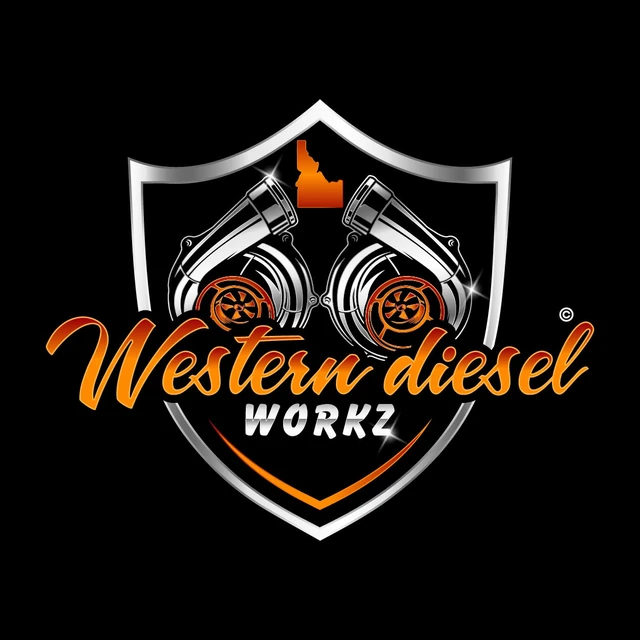
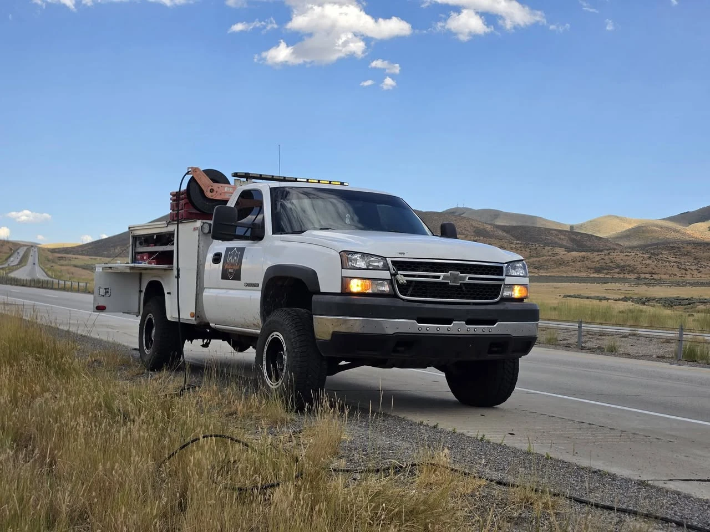
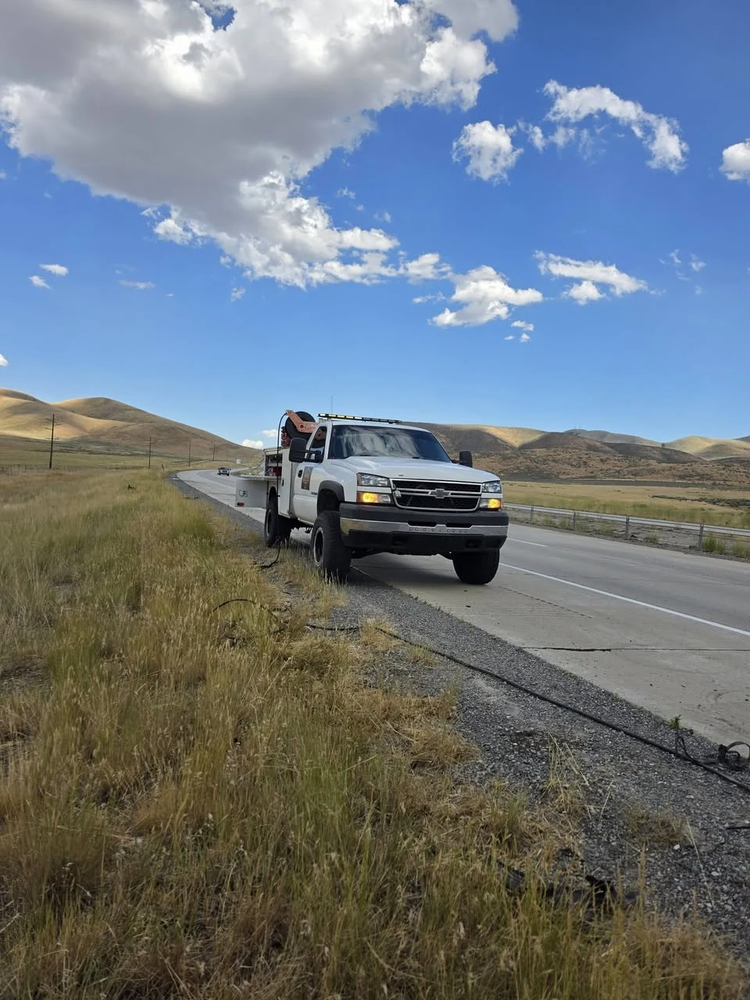

Core service
Mobile diesel diagnostics & repair
Mobile troubleshooting and field repair for diesel trucks and equipment, including Caterpillar and Cummins systems.

Burley, Idaho Mobile repair
Mobile diesel diagnostics and repair throughout the Burley area—with in-shop service now available in Rupert.

What we do
From a warning light that won’t clear to a truck that won’t move, Western Diesel Workz brings practical diagnostic and repair capability to the job.
Core service
Mobile troubleshooting and field repair for diesel trucks and equipment, including Caterpillar and Cummins systems.
Trace the issue
Fault tracing, electrical repair, and computer diagnostics for electrical faults and computer-reported problems.
Keep it breathing
Diagnosis and repair for aftertreatment system faults, derates, warning lights, and related performance problems.
Roadside help
Mobile tire repair and replacement, brake service, jump starts, and lockout help when you’re stuck.

Built for field work
Breakdowns don’t wait for a convenient time or place. Neither does Western Diesel Workz.
Owner-operator Cody Kobza can bring the service truck and diagnostic equipment to you—or take care of the work at the Western Diesel Workz shop in Rupert.
Mobile diagnostics. Diesel repair. Roadside service.
Western Diesel WorkzReal Google reviews
“Cody was great to work with. He answers his own phone and was on site almost immediately at the RV park for our diesel rv. Great diagnostics and a very professional, friendly person.”
“Had a turbo bolt, housing break and gasket leave the chat. 9 hrs from home he had me up and going in a timely manner with an affordable quick fix to get me home.”
“Cody goes out of his way to make it an easy and painless experience. He's honest from the beginning and explains anything I don't understand.”
Mobile response
Tell Cody what’s happening, where you are, and what you’re driving. He’ll help determine what service may be needed.
Call 385.518.7272Share the symptoms, unit, and location.
He’ll narrow down what service the unit may need.
On-site diagnostics and repair begin where the unit is located.
Now open in Rupert
Bring the unit to Western Diesel Workz or call Cody for mobile service throughout the surrounding area.
Western Diesel Workz 102 Grizzly Place, Suite A Rupert, ID 83350 Get directions on Google MapsNeed help now?
Mobile diesel and roadside service throughout the Burley area, with in-shop repair in Rupert.